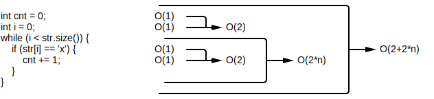

algorithm - A sequence of instructions that are performed to solve some unambiguous problem. Unambiguous means that the problem's description leaves no room for misinterpretation. As such, these problem descriptions are often specified in terms of inputs and outputs.
problem - A class of computational tasks. For example, given a number of cents, figuring out the minimum number of coins to represent those cents is a class of problem (what's the minimum number of quarters, dimes, nickles, and pennies needed to represent some number of cents).
A problem instance is one particular input for a problem. Figuring out the minimum number of coins needed for 77 cents is an instance of the example problem described above. 77 cents is the input.
Big-O - An abstraction that describes an algorithm's performance in terms of some generic input of size n. Performance is measured either in terms of speed or memory consumption:
The idea with Big-O is to quickly describes an algorithm's performance characteristics as n grows, denoted as function O(...). What exactly n represents is dependent on the algorithm and what the level of detail the algorithm works at. For example, algorithms that deal with strings typically work on characters, and so n represents the number of characters in the input string. For example, in terms of speed, the following algorithm runs n operations
int count_x(std::string& str) {
int cnt = 0; // initialize to 0, 1 operation
int i = 0; // initialize to 0, 1 operation
while (i < str.size()) { // looping over n characters: do everything in here per character
if (str[i] == 'x') { // check if 'x', 1 operation
cnt += 1; // add 1, 1 operation
}
}
return x;
}
In the above example, determining the number of elementary operations performed is obvious for everything other than the contents of the while loop. What happens inside the while loop in dependent on the string that gets passed in. If the string ...
When an algorithm's exact execution path isn't clear, whether its because the execution path depends on the input or the algorithm is non-deterministic, standard practice is to assume the worst case. In the example above, the worst case is to assume that the string is comprised entirely x characters. Given that assumption, the performance characteristics becomes obvious:

int count_x(std::string& str) { // O(2+2*n)
int cnt = 0; // |-O(1), setting to 0 is 1 op
int i = 0; // |-O(1), setting to 0 is 1 op
while (i < str.size()) { // |-O(1+1*n),
if (str[i] == 'x') { // | |-O(1), test for ==
cnt += 1; // | | |-O(1), add
} // | | |
} // | |
} // |
Inside the while loop, the code checks if the character is x and increments the counter if it is. Because the assumption is made that the string is filled with x characters, both lines are guaranteed to execute: O(2). The while loop itself goes over every character of the string, meaning those 2 operations run n times (where n is the number of characters in the string): O(2*n). Also, the first two operations at the beginning initialize variables to 0: O(2). Ultimately, the number of elementary operations executed in the example above is O(2+2*n), meaning that the algorithm executes O(2+2*n) elementary operations given a string of size n.
The above example used a single input. If an algorithm has multiple inputs, other variables may be used to represent the size of each input. For example, if a function took two strings for its inputs, the first string's size could be represented as n while the second string's size could be represented as m.
bool contains(std::string& str_longer, std::string& str_shorter) { // O(n*(m*4))
for (int i = 0; i < str_longer.size() - str_shorter.size(); i++) { // |-O(n*(m*4))
for (int j = 0; j < str_shorter.size(); j++) { // | |-O(m*4)
bool failed = false; // | | |-O(1)
if (str_longer[i+j] != str_shorter[j]) { // | | |-O(1+1), adding to get index, then testing for !=
failed = true; // | | |-skip, won't happen in worst case
break; // | | |-skip, won't happen in worst case
} // | | |
if (!failed) { // | | |-O(1), testing for !
return true; // | | |-skip, won't happen in worst case
} // | | |
} // | | |
} // | |
return false; // |-skip, assuming this has no cost but it may
} // |
Big-O is essentially a measure of growth (e.g. how much quickly does memory usage grow in relation to input size). As such, it's typically to simplify Big-O notation into classes of growth. For example, rather than saying O(2+2*n), it's simpler to say that the algorithm grows linearly and boil down the equation to just O(n). How you boil down depends on the heaviest growing term in the equation.
⚠️NOTE️️️⚠️
Logarithmic growth typically applies to trees, such as searching a binary search tree.
⚠️NOTE️️️⚠️
The "five common rules" as according to the book:
| Rule | Example |
|---|---|
| Multiplicative constants can be omitted | O(c*n) grows same as O(n) |
| Smaller terms can be omitted | O(n+5) grows same a O(n) |
| Out of two polynomials, the one with a larger degree grows faster | O(n^3) grows faster than O(n^2) |
| Any polynomial grows slower than exponential | O(2^n) grows faster than O(n^2) |
| Any polylogarithm grows slower than a polynomial | O(n^2) grows faster than O((log(n))^2) |
Note that a polylogarithm is a function in the form log(n)^a.
bruteforce - An algorithm design strategy that examines all possible options. Bruteforce algorithms are often simple to design, but are typically too slow to be useful for larger inputs.
branch-and-bound - An algorithm design strategy that explores by branching into only viable options. This algorithm design strategy explores outward (branches), and as the exploration leads to further exploration options, those exploration options are tested for viability (bound) before being considered.
greedy - An algorithm design strategy that explores by branching into the locally optimal choice (most attractive choice) at each step. This algorithm design strategy often used to produce a "good enough" answer where as an exact answer would take much longer. However, sometimes the greedy approach will produce an exact answer.
dynamic programming - An algorithm design strategy that breaks down a problem into sub-problems. Those sub-problems, once solved, go on to construct the solution to the original problem.
The difference between dynamic programming and divide-and-conquer is that dynamic programming typically has overlapping sub-problems. For a problem, the number of sub-problems produced is typically very large and the same sub-problem may appear more than once. Dynamic programming organizes computations such that those repeating sub-problems only need to be solved once.
In addition, the sub-problems are for divide-and-conquer are just smaller sized instances of the original problem. This may not be the case with dynamic programming.
divide-and-conquer - An algorithm design strategy that splits a problem into smaller sub-problems. Those sub-problems, once solved, are combined to construct the solution to the original problem.
The difference between dynamic programming and divide-and-conquer is that dynamic programming typically has overlapping sub-problems. With divide-and-conquer, the sub-problems typically don't overlap. In addition, the sub-problems are for divide-and-conquer are just smaller sized instances of the original problem.
recursive - An algorithm design strategy where the algorithm runs itself to solve a problem. Each self invocation typically runs on a smaller instances of the same problem, effectively a sub-problem.
The difference between recursive algorithms and divide-and-conquer is mostly the self-invocation (recursion). Many recursive algorithms can be written as divide-and-conquer and vice-versa.
⚠️NOTE️️️⚠️
Not every recursive algorithm can be converted to divide-and-conquer. See here.
randomized - An algorithm design strategy that uses a source of randomness as part of its logic (non-deterministic). Randomized algorithms come in two forms:
Las Vegas algorithm - A randomized algorithm that delivers a guaranteed exact solution. That is, even though the algorithm makes random decisions it is guaranteed to converge on the exact solution to the problem its trying to solve (not an approximate solution).
Monte Carlo algorithm - A randomized algorithm that delivers an approximate solution. Because these algorithms are quick, they're typically run many times. The approximation considered the best out of all runs is the one that gets chosen as the solution.